Содержание:
Введение
Термостаты MOON Home измеряют не только температуру воздуха, но ещё и относительную влажность. Для точного измерения датчик вынесен за пределы корпуса. Термостат отображает температуру в комнате, а не у себя в корпусе. Не использует батарейки, питается от распространённого USB 5 вольт. Подойдёт любая зарядка для телефона.
Термостаты MOON Home управляются полностью по Wi-Fi. Они умеют работать вместе, и в этом сила. Вы хотите поддерживать температуру в спальне, для этого поставьте один термостат в спальне, а второй установите на кухне и подключите к котлу. Всё. Не надо тянуть провод от котла в другую комнату.
MOON Home подключаются к роутеру и работают в пределах Вашей домашней сети. Наличие интернета необязательно, термостат может его использовать только для синхронизации времени (ручная установка также возможна). В одной сети могут работать до восьми термостатов. Данные со всех термостатов отображаются на одной странице. Удобно.
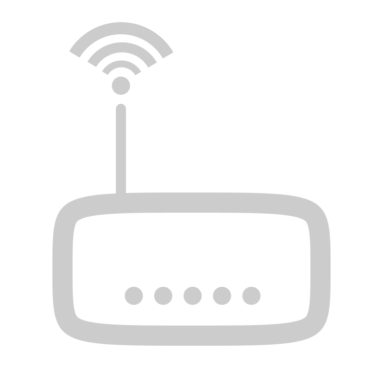Три температурных режима, семь индивидуальных графиков с настройкой на каждый час. Хотите прогреть квартиру перед приёмом душа? Откройте сайт, нажмите кнопку, задайте время, готово. Через указанное время термостат вернётся в штатный режим. Интерфейс прост, информативен. Создайте ярлык на главном экране своего телефона, открывайте сайт в один клик.
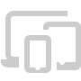Технические характеристики термостата
- Напряжение питания: 5 Вольт;
- Ток потребления: 200-300мА;
- Частота опроса датчика: 15 секунд;
- Частота обновления данных: 1 минута;
- Гистерезис: 0.5 °C. То есть при температуре, ниже заданной на 0.5°С, котёл включится. А когда она превысит заданную на 0.5°C, котёл выключится;
- Точность измерения температуры: ±0.5°С;
- Точность измерения относительной влажности: ±3%;
- Длина провода питания: 1 метр;
- Степень защиты от пыли и влаги: IP22.
Условия эксплуатации
НЕ ПОДКЛЮЧАТЬ К РЕЛЕ ТЕРМОСТАТА НАГРУЗКУ 220 ВОЛЬТ;
- Не подвергать длительному воздействию прямых солнечных лучей;
- Не разбирать;
- Не ронять, не тянуть за провода;
- Не погружать в воду, не брызгать на термостат;
- Допустимая температура эксплуатации: -20..+40 °C.
Подключение к котлу
В зависимости от модели котла последовательность действий может отличаться.
ВЫНУТЬ ШНУР ПИТАНИЯ КОТЛА ИЗ РОЗЕТКИ !!! и подождать около минуты;
- Снять переднюю крышку, для этого открутить снизу два болтика (по одному с каждой стороны) и снять крышку движением вверх; 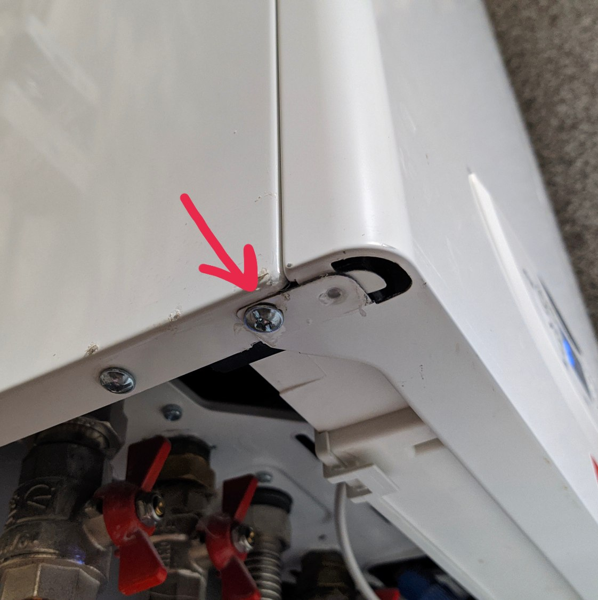 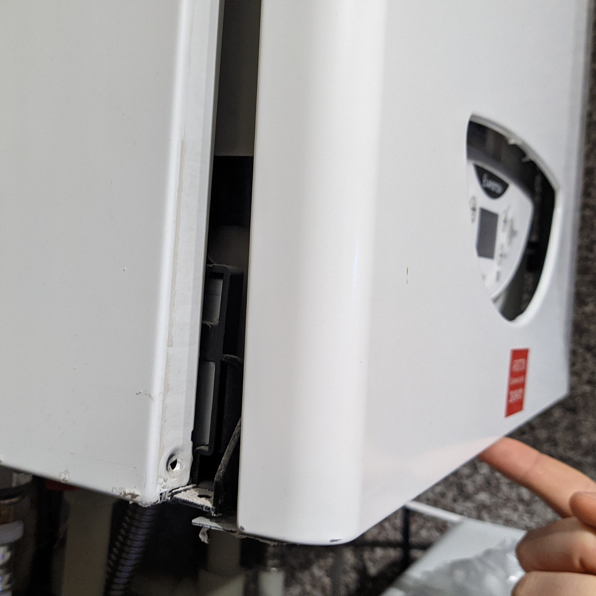
- Отогнув зажимы, наклонить движением на себя блок управления котлом; 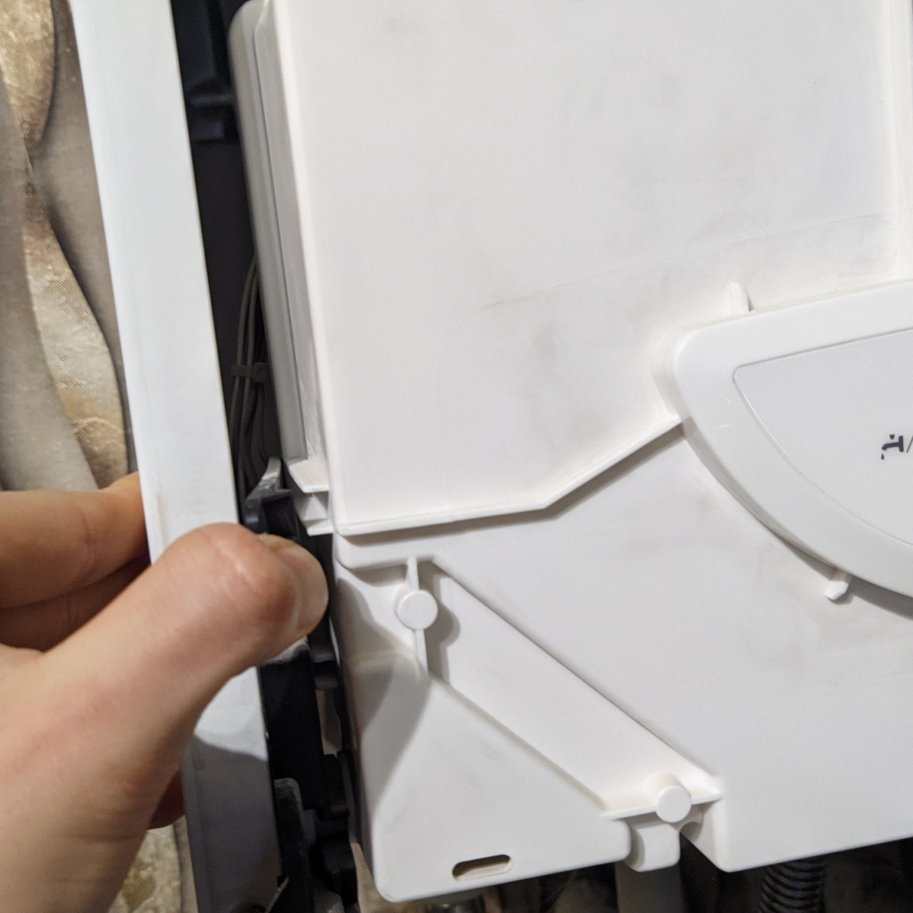 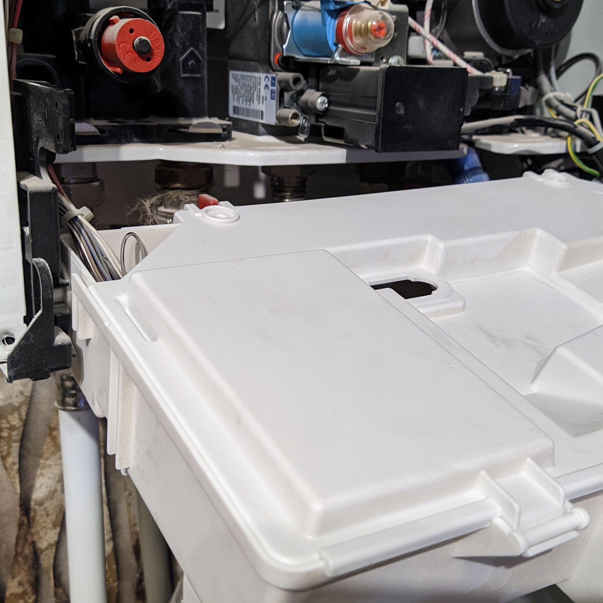
- Снять с блока управления заднюю крышку; 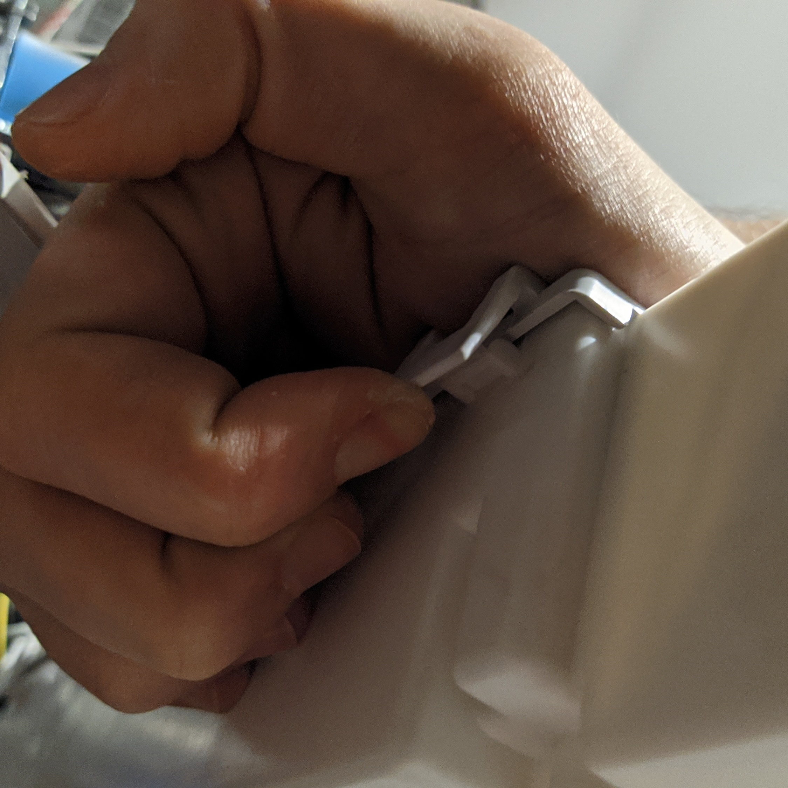
- Найти разъём с подписью "TA1", в нём должен быть установлен штекер с перемычкой; 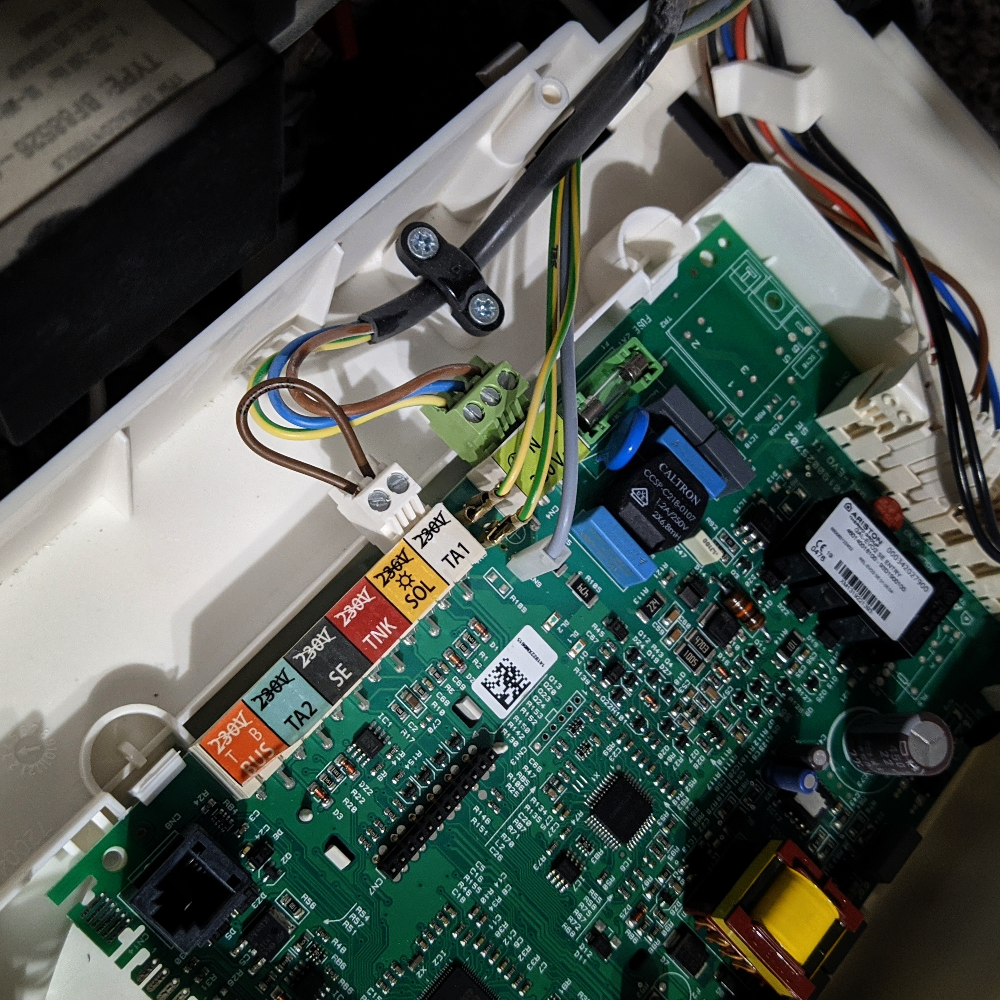
- Вынуть штекер, из него вынуть перемычку, вместо неё подключить двухжильный кабель (зачистив предварительно его жили с обеих сторон); 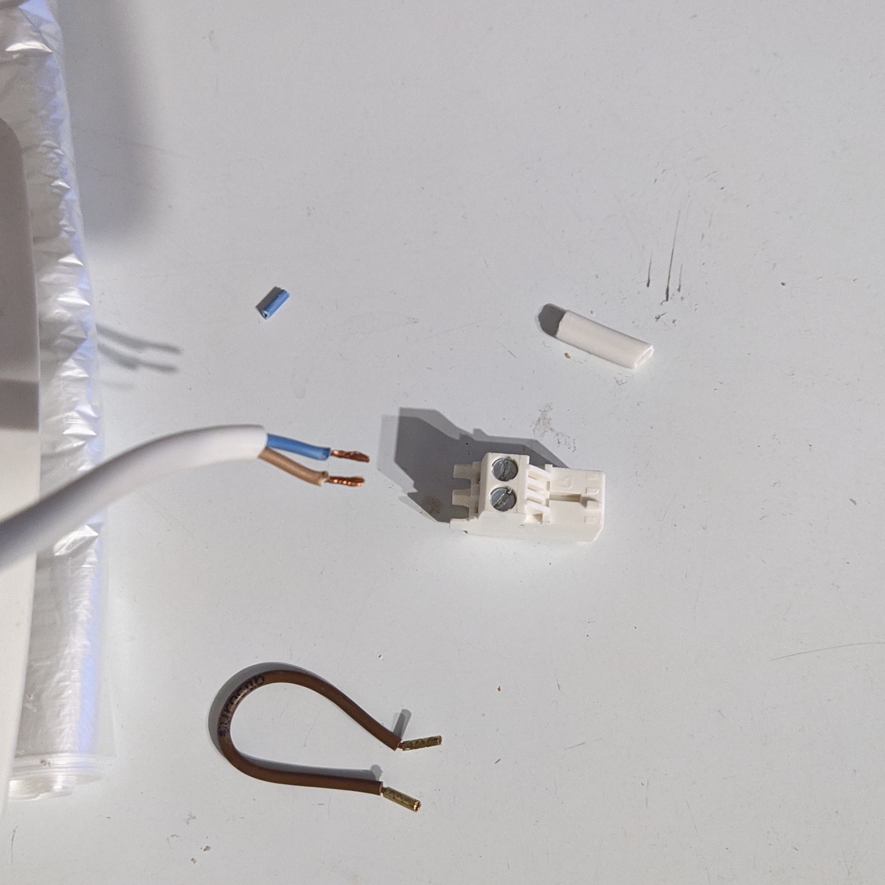
- Снять с задней крышки блока управления резинку, протянуть через неё кабель; 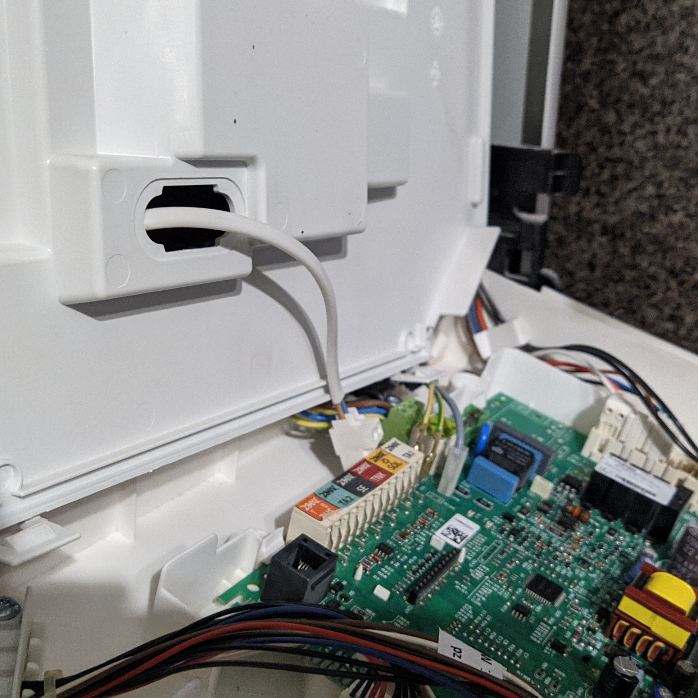
- Подключить штекер к разъёму на котле; 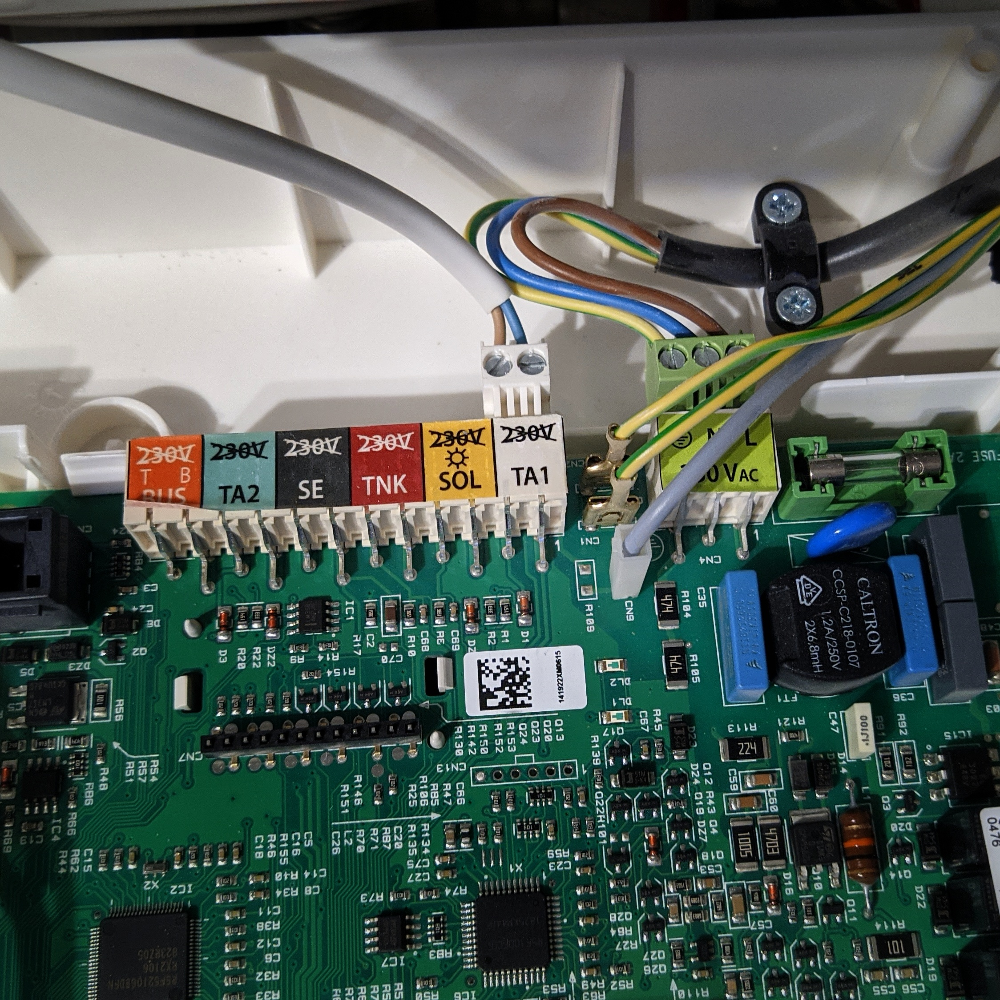
- Задвинуть блок управления обратно, вернуть на место переднюю крышку котла и прикрутить её.
На задней крышке термостата есть разъём, куда надо подключить второй конец кабеля, идущего от котла. Для этого легко надавите на разъём и, удерживая его в таком состоянии, вставьте жилы кабеля. Отпустите разъём. Готово. Полярности здесь нет, не имеет значения какую жилу куда вставлять.

Первое включение (подключение к домашней сети)
Если Вы купили несколько термостатов, не включайте все сразу. Включите сначала тот, который будет стоять в комнате, температуру в которой необходимо поддерживать, проверните с ним действия, описанные ниже. Затем повторите те же действия с остальными термостатами.
При первом включении термостат создаёт Wi-Fi точку доступа с названием — "MOON Home XXXXXX" (где "XXXXXX" — код термостата). Точка доступа без пароля. Подключитесь к ней с любого устройства. В браузере должна открыться web-страница термостата. Если этого не произошло, откройте её вручную. В режиме точки доступа адрес термостата всегда "http://192.168.4.220/". На открывшейся странице нажмите кнопку "Домашняя сеть". Произойдёт прокрутка до соответствующего пункта. Введите название своей сети и её пароль. Нажмите кнопку "Подключиться...". Если данные введены правильно, термостат успешно подключится к Вашей сети и выключит у себя режим точки доступа. Если введены некорректные данные, термостат снова создаст Wi-Fi точку доступа. Адрес термостата в домашней сети состоит из четырёх чисел, разделённых точками (без кавычек): "192.168.x.220" (где "x" — число, зависящее от модели роутера). При успешном подключении на дисплее отобразятся третье и четвёртое число адреса термостата (первое и второе число всегда такие, как написано выше). Запомните их. Готово. Проделайте то же самое с остальными термостатами (только у них на дисплее не будет выводиться адрес, т.к. адрес для всех термостатов один).
Интерфейс термостата
Находясь в домашней сети, перейдите по адресу (без кавычек) "192.168.x.220", подставив вместо "x" число, которое отобразилось на первой строке дисплея термостата при подключении к домашней сети.
Самые распространённые адреса: "192.168.0.220", "192.168.1.220".
Откроется web-страница термостата. Здесь Вы можете наблюдать за текущими показаниями термостатов и гибко настроить температуру. Но сперва дайте имена всем термостатам в домашней сети, для этого раскройте список термостатов, нажав на него. Затем нажмите на иконку справа от имени, которое хотите поменять, переименуйте и нажмите "Сохранить". Готово. Также, если нажать не на иконку, а на сам текст, отобразится погода на выбранном термостате.
Блок ниже актуален, если у Вас несколько термостатов.
Как понять, где какой термостат? Ведь они изначально они все "без имени". - Вверху списка всегда управляющий термостат (тот, на котором отображался его адрес в домашней сети). - Сравните температуру на сайте и на дисплее термостата.
Теперь прокрутите страницу до настроек, измените значения температур на комфортные для Вас. Затем настройте расписание, в какой час какого дня необходимо поддерживать ту или иную температуру. Вы можете настроить до семи расписаний (на каждый день в неделе), либо применить одно расписание для нескольких дней. На телефоне расписания могут не влезать в экран по ширине, при этом будет доступна прокрутка по горизонтали. Также можно изменить название любого расписания на своё. Для этого нажмите на него и введите новое. Последовательность действий, описанных выше, не важна, меняйте любые настройки, как хотите.
Это важно!
После проделанных действий не забудьте нажать кнопку "Сохранить" вверху экрана, чтобы Ваши изменения сохранились и вступили в силу.
Безопасность, Конфиденциальность
- Термостат Не собирает, Не обрабатывает, Не хранит, Не передаёт Никаких персональных данных.
- Выход в интернет используется Только для получения даты и времени, и Никак иначе.
- Доступ к интерфейсу термостата возможен только внутри Вашей домашней сети, и ниоткуда более.
- После подключения к домашней сети термостат (как и остальные устройства в данной сети) находится под защитой Вашего роутера.
- В режиме точки доступа (когда нет данных сети для подключения, либо эта сеть недоступна) термостат не защищён паролем, поэтому настоятельно рекомендуем первым делом подключить термостат к домашней сети.
- При включении термостат автоматически подключится к Вашей сети, если Вы ранее ввели её данные.